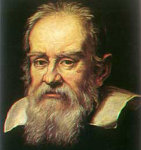

 This is a portrait of Galileo by Justus Sustermans, made near the end of Galileo's life.
In the summer of 1609, while in Venice to visit some friends, Galileo heard about the invention in Holland of a ``spyglass'' that could make distant objects appear near. Galileo set about to re-invent it independently. Having constructed a telescope of about twenty power, he turned it on the sky and rapidly made several key discoveries.